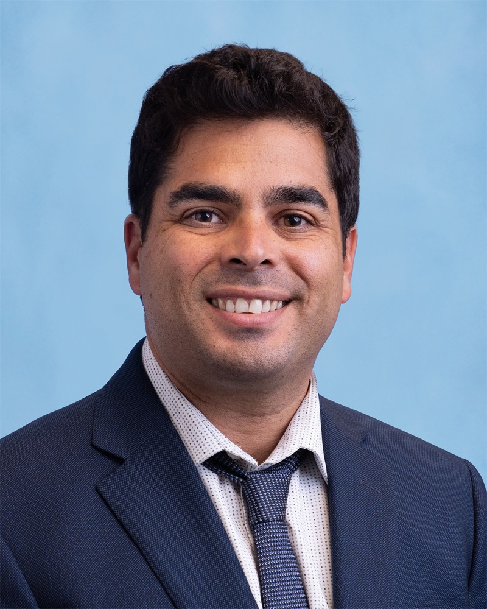

שחיקת בסיס האגודל
כאב בבסיס האגודל באחיזה חזקה — פתיחת צנצנת, סחיטת מגבת. מתחילים בסד ובטיפול שמרני, וכשאלה לא מספיקים — ניתוח לשחזור בסיס האגודל.
מומחה לכירורגיה אורתופדית, עם התמחות־על בכירורגיית כף היד, המרפק והעצבים הפריפריים.

ד״ר טל קלימיאן מטפל בפגיעות ובמחלות של כף היד, המרפק והעצבים הפריפריים — מתסמונת התעלה הקרפלית ואצבע הדק, דרך פגיעות עצבים וגידים, ועד שחזורים במיקרוכירורגיה.
כשאפשר, והדרך בטוחה — החתך קטן. ולא כל בעיה מחייבת ניתוח.
כאב בבסיס האגודל באחיזה חזקה — פתיחת צנצנת, סחיטת מגבת. מתחילים בסד ובטיפול שמרני, וכשאלה לא מספיקים — ניתוח לשחזור בסיס האגודל.
השבר הנפוץ בשורש היד, לרוב אחרי נפילה על יד פשוטה. כשנדרש ניתוח — ייצוב בפלטה, ובשבר שנכנס למפרק גם ארתרוסקופיה לבדיקת יישור פני המפרק.
בדיקה וטיפול דרך פתחים קטנים במפרק שורש כף היד — פגיעות ברצועות ובסחוס, וגנגליון.
תיקון עצבים פריפריים והשתלות עצב תחת מיקרוסקופ, כשהפגיעה מתאימה לחיבור.
כאב עצבי ממוקד אחרי פציעה, ניתוח או קטיעה — שתל עצב מתורם, RPNI ו-TMR.
העברת גיד מאזור תקין, כשהעצב כבר לא מפעיל את התנועה — שחזור היד לאחר שיתוק עצב.
רוב ניתוחי היד הנפוצים — שחרור תעלה קרפלית, אצבע הדק, מחלת דופויטרן והסרת גידולים — אפשר לבצע כשהמטופל ער, בהרדמה מקומית בלבד.
ד״ר קלימיאן שותף למחקרים בכירורגיית כף היד והמרפק, שפורסמו בכתבי־עת מדעיים. בין הנושאים:
לשאלות, לייעוץ או לפניות מקצועיות — אפשר לכתוב בדוא״ל:
kalimi.hand.surgery@gmail.comד״ר טל קלימיאן · רופא בכיר, בית חולים אסותא אשדוד